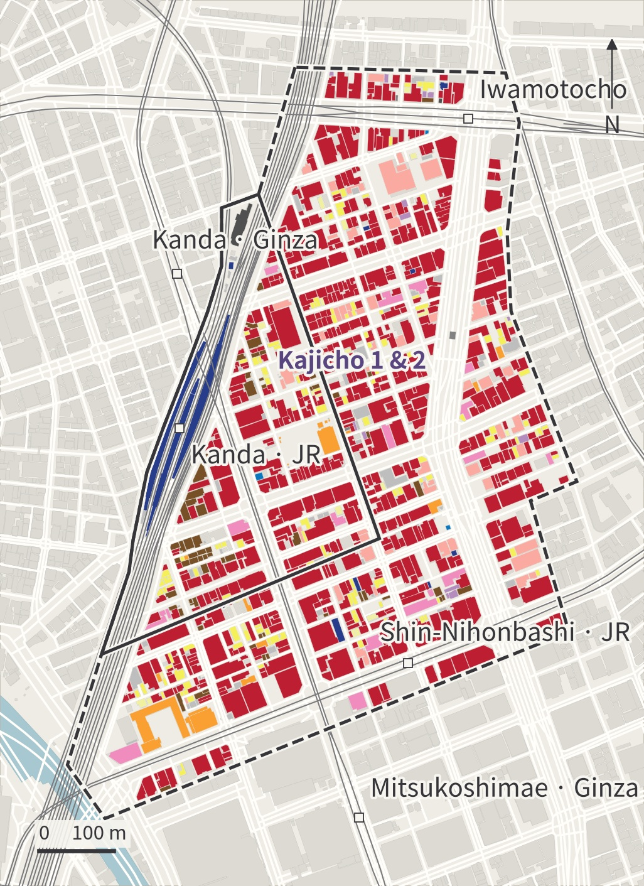

DESIGN NOTES / 2026.10.15
字与图，使用同一套语言
复古的阅读气质，清楚的图纸层级。字体按文字和用途组合；每一类地图保留自己的含义。
返回作品集Typography / 字体层级
标题用 Libre Caslon Display 与思源宋体／Noto Serif；正文用 Source Serif 4 与 Noto Serif。界面、图例和表格用 IBM Plex Sans 与 Noto Sans。日文页使用日文字形，中文页使用简体中文字形。
按照 CSS Composite Font 的 unicode-range 与 size-adjust 方法组合西文、汉字和假名。行高固定，基线位移为零；字体文件随网站自托管。
CSS Composite Font鍛冶町 / KAJICHO
鍛冶町的街道、神田の暮らし、a district in transition.
正文 16 px / 行高 1.8；界面 13 px；图注 12 px。大标题 48–90 px，章节标题 32–52 px，三级标题 24 px。窄屏按同一层级缩放。公式保留 KaTeX 的数学字体；代码与伪代码使用 IBM Plex Mono / 系统等宽字体。
E = Σ (Aᵢ × Iᵢ)
for building in district:
record(source, year, unit)Colour / 地方色彩
千代田区公共导视手册以深灰为主色、江户紫为基本重点色。官网给出印刷参考值：江户紫 C78 M100 Y0 K33 / PANTONE 269C；深灰 C0 M2 Y0 K68 / Cool Gray 11C。以下 HEX 是本工作室的屏幕配色。
Paper
#F7F5EF
Ink
#36353A
Edo purple
#59457F
Water
#799BA7
Green
#879781
Map language / 图纸规则
建筑用途和土地利用按照国土交通省《都市計画基礎調査実施要領》第5版的 RGB 分类色，先核对类别含义，再对应颜色。用途地域采用独立图例；高度为顺序色阶。
同一图集保持北向、范围、边界样式与比例尺一致。未知值单列，缺失记录不计为零。每幅图附数据来源、年份、CRS 与处理范围，便于现场核对与后续更新。
MLIT / 2023 · 2025 revision

来源与复现
网页文字与导出图均保留来源，原始资料保持原样。